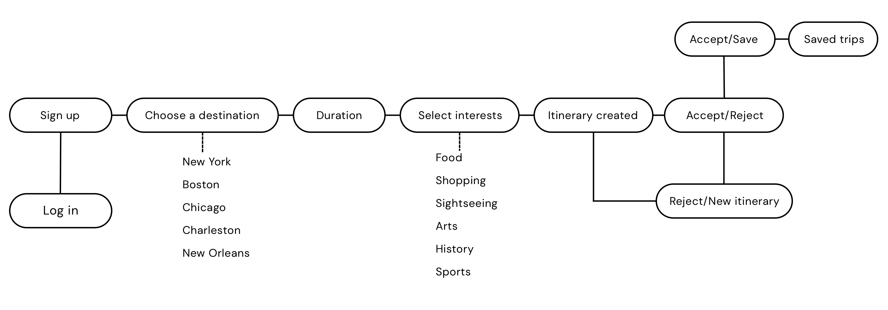
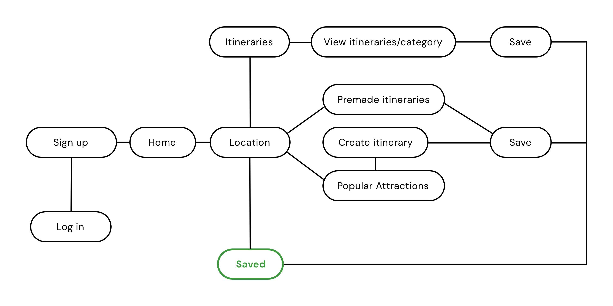
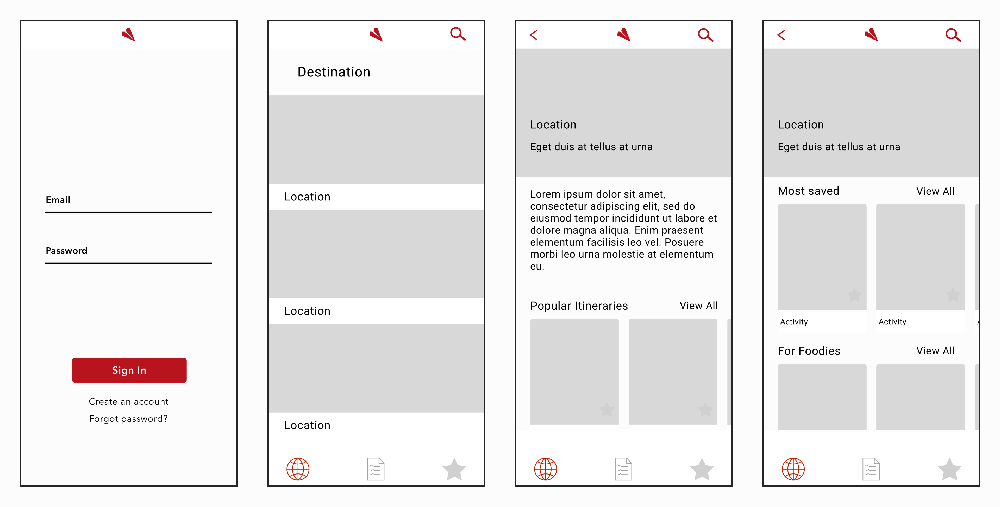
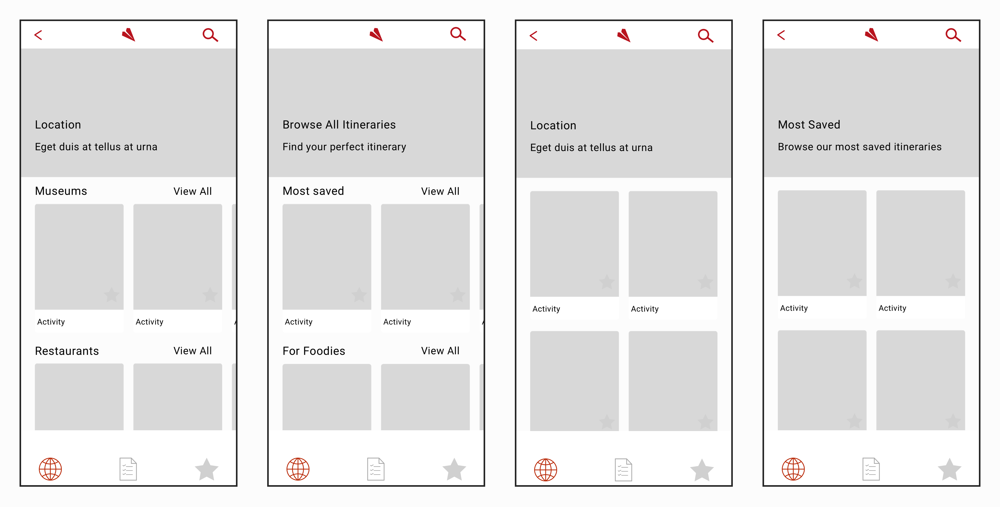
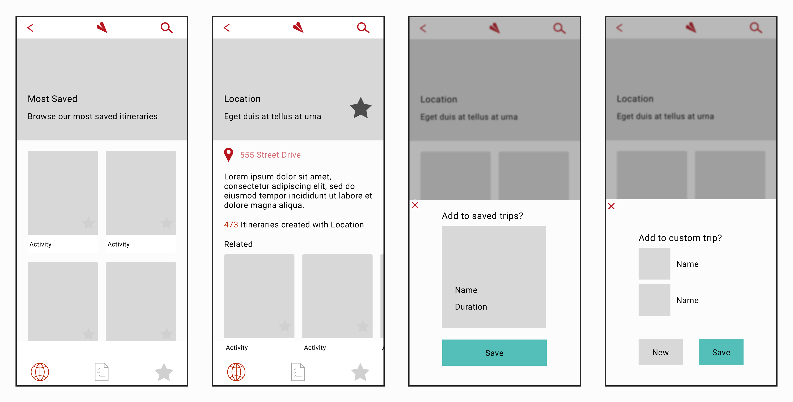
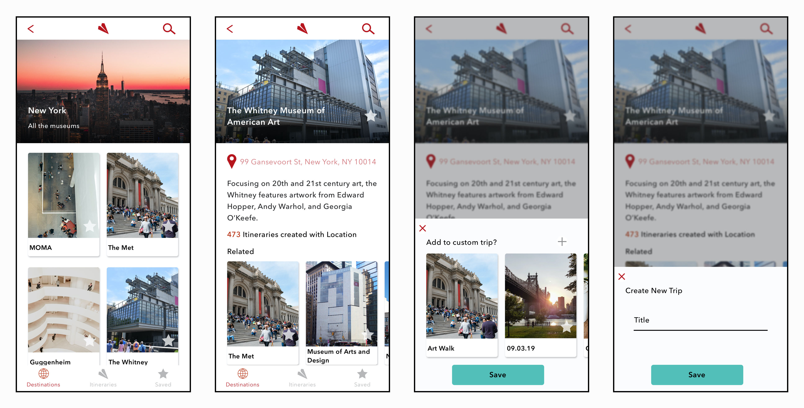
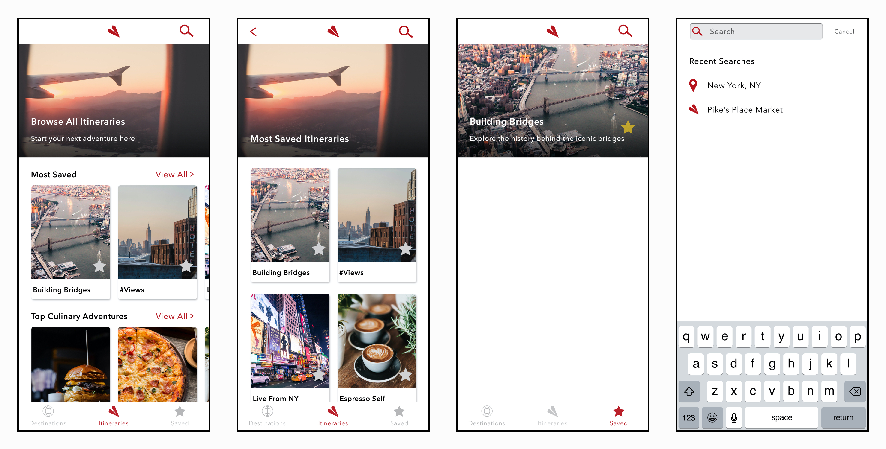
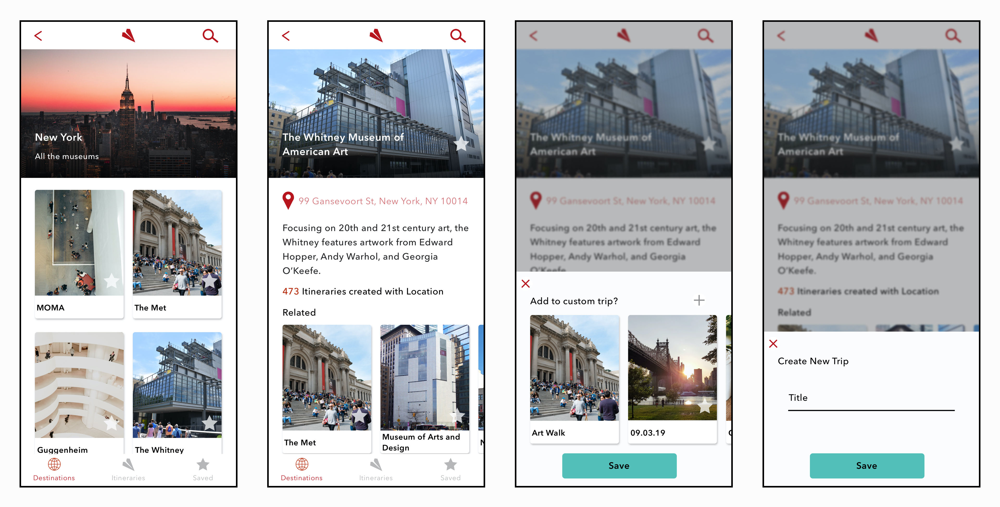
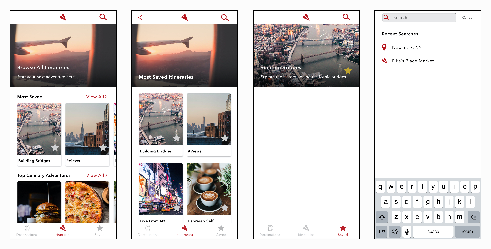

Traveler
Traveler is my idea for an app for that has premade itineraries as well as options to create your own itinerary. Users can select a city and view itineraries or they can view activities and create their own adventure.
The Problem
Traveling is supposed to be relaxing. It is supposed to be an opportunity for people to experience a new city, region, state, country, or continent. People can get caught up with planning and end up frustrated trying to get a set plan, especially when in a larger group. And people often look to user reviews for inspiration while traveling. While helpfup, these can leave people to miss out on other opportunities.
Initial Flow & Wireframes
The first idea was to have users choose a city, select a few interests and have the app create a custom itinerary. Drawing out the flow was simple and it was pretty straight forward. While designing the wireframes, however, the app seemed to lack any substance. While it would be a custom made itinerary, there was not much room for the users to grow. They would be relying on an app too much and wouldn't have an opportunity to change how they travel. Like travel, technology should help us grow.

Final Flow & Wireframes
The final, chosen, flow had users choose a city and then they could either browse itineraries or activities. With the activities, users could create their own itinerary once they start to get accustomed to traveling and want to take a chance to create their own trip.
   HiFi
The final designs used a lot of pictures for a reason. By using as many pictures as possible, users would see what cities have to offer and would be inspired to travel. There is a small preview of the itineraries and activities which a user can scroll left and right before choosing "view all" to see all of the itineraries.

 


